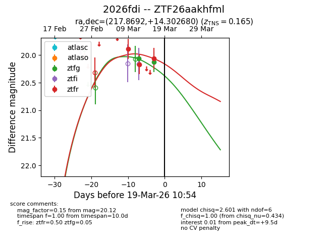
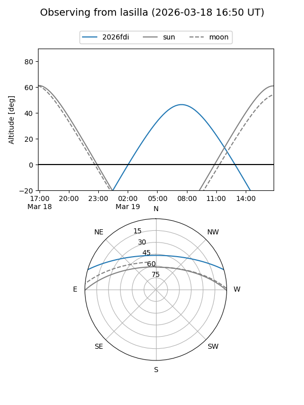
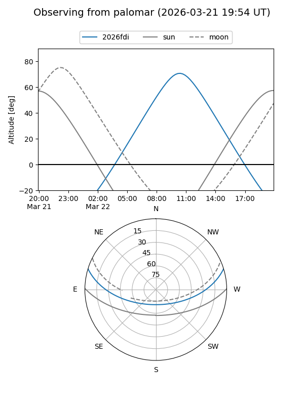
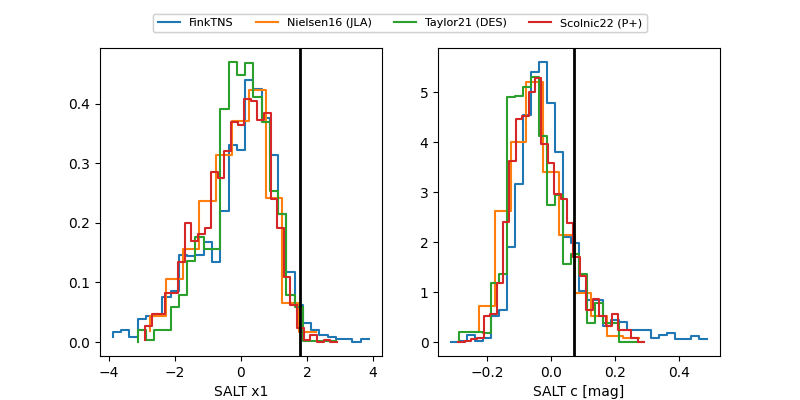

2026fdi
Target 2026fdi at 2026-03-19 10:56
Aliases and brokers:
FINK: link
Lasair: link
ALeRCE: link
TNS: link
YSE: link
alt names
ZTF26aakhfml (ztf,fink_ztf)
2026fdi (tns,yse)
Coordinates:
equatorial (ra, dec) = 217.8692,+14.30268
equatorial (HMS+DMS) = 14:31:28.62,+14:18:09.65
galactic (l, b) = (9.1473,+63.40430)
Flags:
confirmed ia
Photometry:
last ztfg=20.12, ztfr=20.06
2 ztfg, 3 ztfr detections
Lightcurve

Visibility


Additional plots
